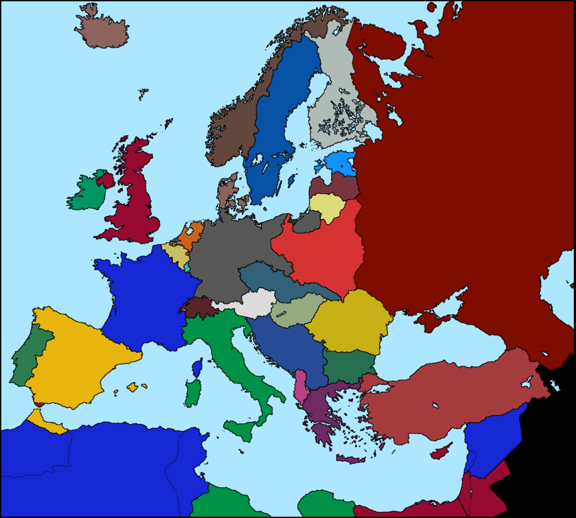

التاريخ هو نفسه
هزم الألمان في الحرب العظمى
يونيو 1914: قتل فرانسيس فرديناند في سراييفو
يناير 1915: المعركة البحرية لبنك دوجر
يناير 1916: اكتمال إخلاء جاليبولي
يناير 1917: تركيا تدين معاهدة برلين
يناير 1918: نقاط الرئيس ويلسون الأربعة عشر
يناير 1919: اجتمع مؤتمر السلام في باريس
خريطة أوروبا بحلول عام 1936

يناير 1936: أصبح هتلر مستشارًا لألمانيا
مارس 1938: ضمت ألمانيا النمسا
سبتمبر 1938: اتفاقية ميونيخ تمنح ألمانيا جزيرة سوديتنلاند
مارس 1939: ألمانيا تطلب ميميل من ليتوانيا وليتوانيا تمنحها إلى ألمانيا
أبريل 1939: إيطاليا تغزو ألبانيا
أغسطس 1939: ألمانيا ترسل إنذارًا نهائيًا لبولندا بخصوص الممر البولندي ومدينة دانزيغ الحرة
سبتمبر 1939: غزت ألمانيا بولندا
سبتمبر 1939: غزا الاتحاد السوفيتي بولندا
سبتمبر 1944: كان يوم النصر ناجحًا
انتهت الحرب في عام 1945 مع انتصار الحلفاء